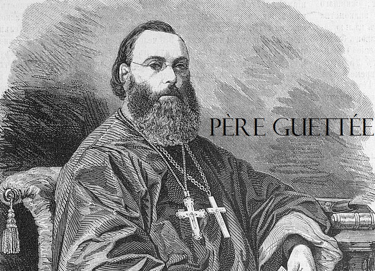

Paroisse Orthodoxe Sainte Clotilde
Voici les différentes vidéos sur le Père Guettée :
- Histoire de l'Eglise de France du père Wladimir Guettée :
Introduction générale de l'auteur : Le Druidisme dans les Gaules
Suite de l'introduction de l'auteur. Il y survole divers sujets : les Pères des cinq premiers siècles, les élections épiscopales, les principales hérésies, les persécutions, etc.
Premier chapitre,qui couvre la période 67-180, c'est à dire principalement les premières prédications et les premières persécutions
Deuxième chapitre
